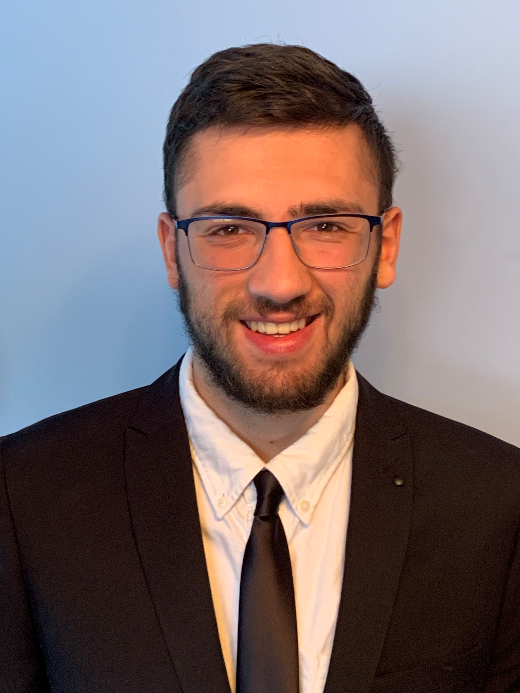

Hello! I'm Benjamin, a computer science student, studying at University of Ontario Institute of Technology in Oshawa, ON. I am also an interdisciplinary academic researcher, seeking any research opportunities. I consistently practice strong problem solving skills, and am able to discover unique solutions to problems, on my own. I am able to organize work for ease of accessibility and readability. I know how to effectively collaborate with others of varying backgrounds while working on a team -- I am truly a strong leader and listener. I have proven to, and will continue to strive to make positive experiences in all my work.
